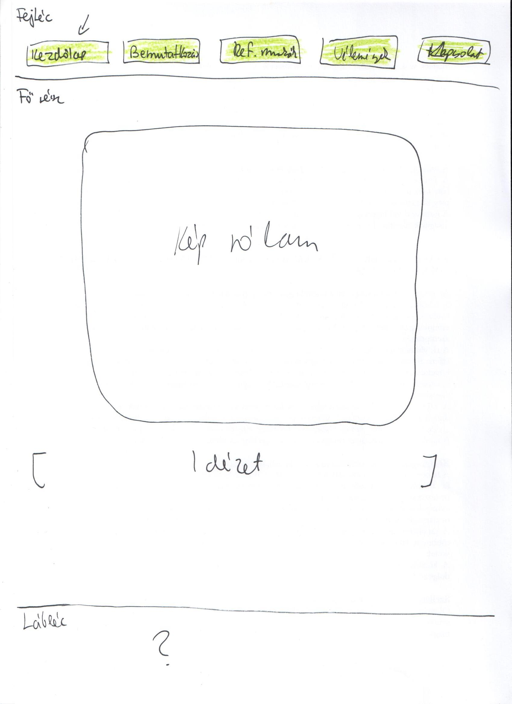
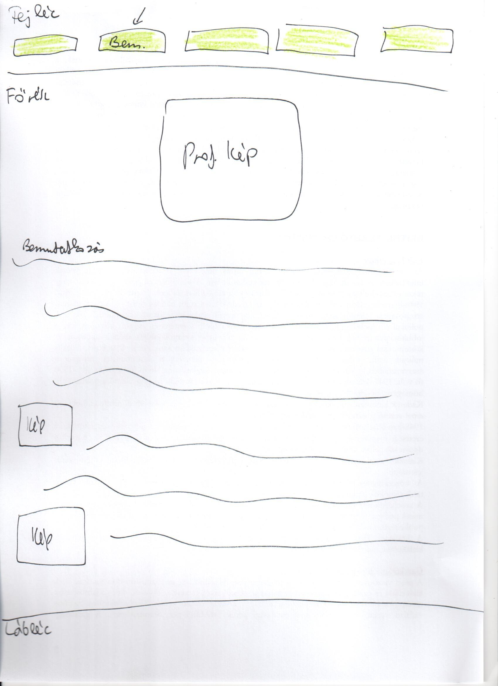
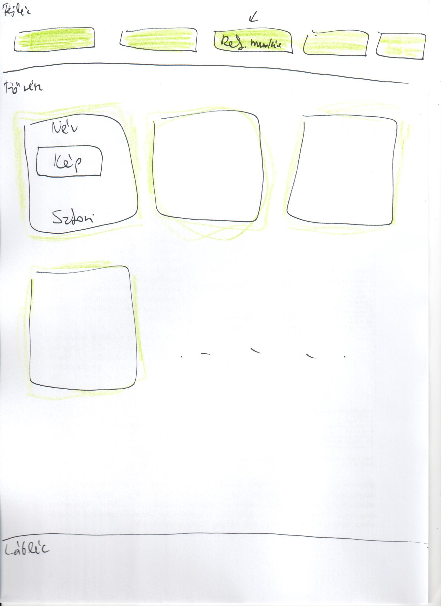
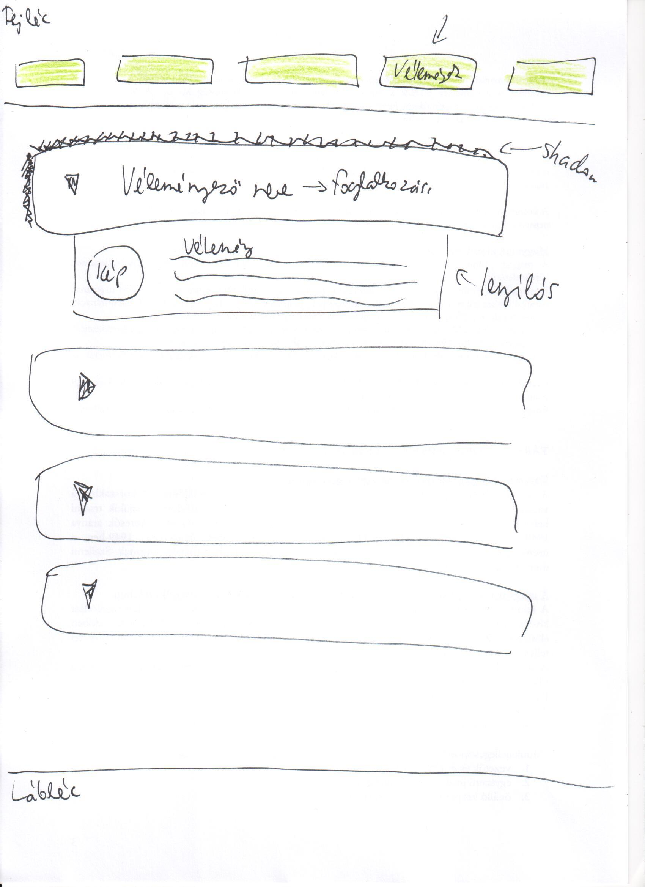
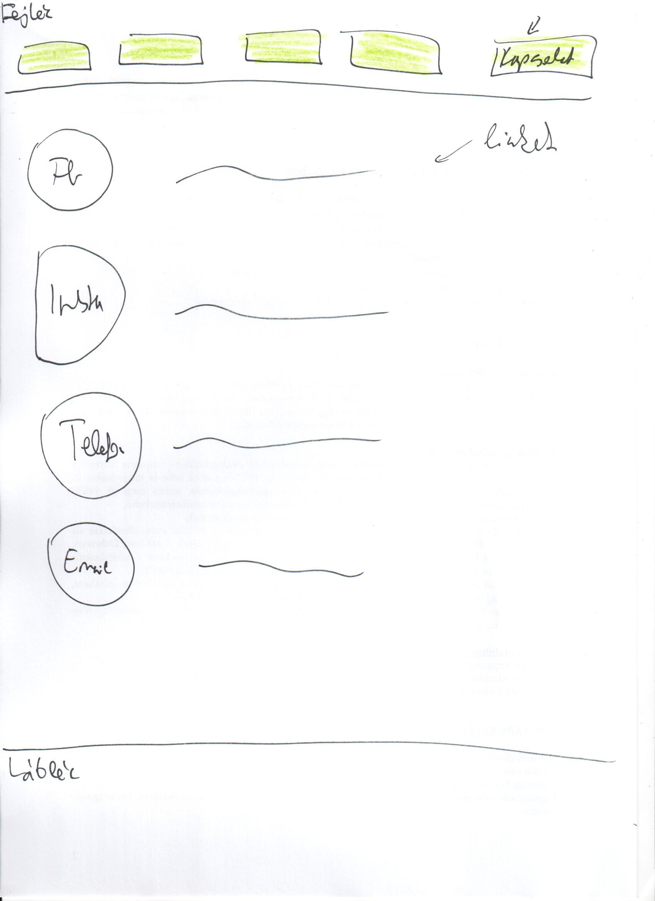
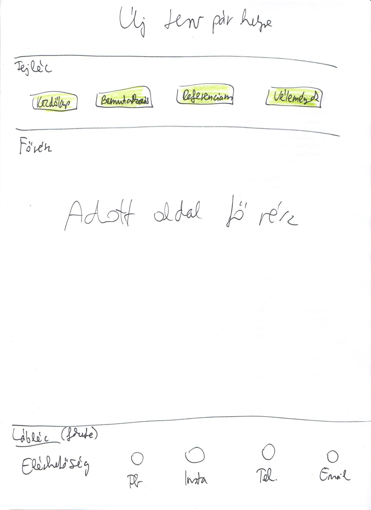

Tervek:






Nehézségek:
Szerettem volna létrehozni az alján az oldalaknak egy gombot, amivel az oldal tetejére lehet ugrani, de inkább elvetettem, mert nem működtek a kódok amiket ajánlottak ennek a megoldására. Másik nagy fejtörést az okozott, hogy a láblécbe mit tegyek, és akkor jött az ötlet, hogy a kapcsolatoknak nem nyitok új oldalt, hanem ahogy sok oldalon, a lábléchez teszem, így minden egyes lapon elérhető. A színválasztással is voltak gondjaim, valami természetközelit szerettem volna, de mégis lányosat, illetve a színek harmóniája is cél volt. Próbáltam változatossá de ugyanakkor felhasználó-baráttá tenni az oldalt. Ami még nehézség volt, hogy ne legyenek sémaszerűek az oldalak, de mégis legyen köztük összhang. A színekkel próbáltam ezt elérni. A tervek elég elnagyoltak lettek, nem nagyon szoktam előre eltervezni az ilyesmit, inkább belevágok és majd alakulgat, de próbáltam tartani magam az előre kigondoltakhoz is. Nehézséget okozott, hogy a Firefox Developer nem változtatta át az én változtatásaimat hiába mentettem és frissítettem. Átléptem az Opera böngészőbe, ott már működött rögtön, de ott meg az F12-t nem engedi használni. Nagyjából ezekkel küzdöttem a weblap elkészítése közben.
Felhasznált oldalak:
https://fonts.google.com/specimen/Roboto?sidebar.open=true&selection.family=Roboto:ital,wght@1,100
https://www.rapidtables.com/web/color/RGB_Color.html
https://www.w3schools.com/html/
https://www.facebook.com/olivka.gemesi/photos
https://css3gen.com/box-shadow/